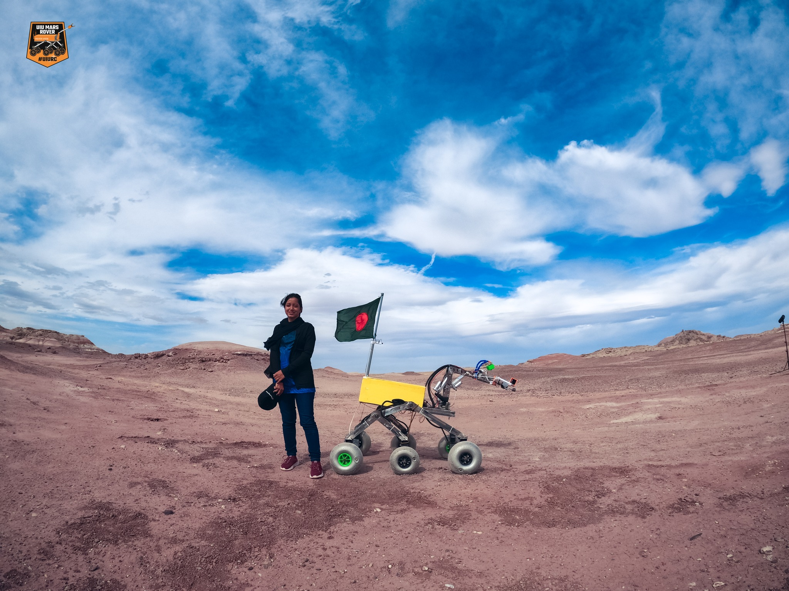
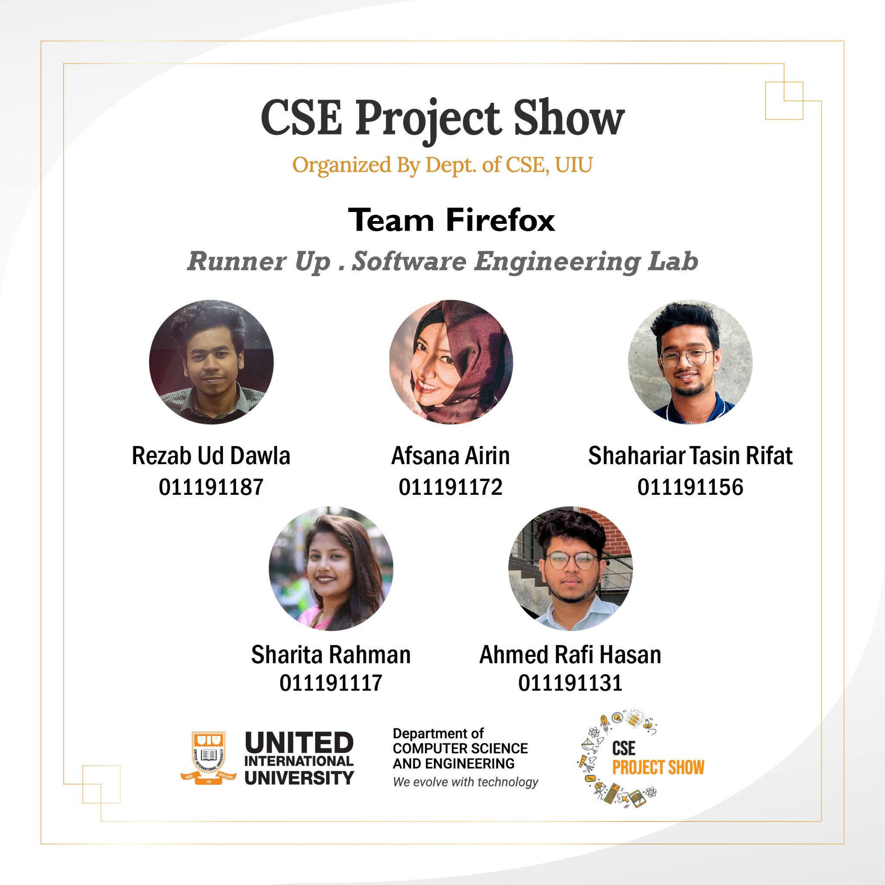
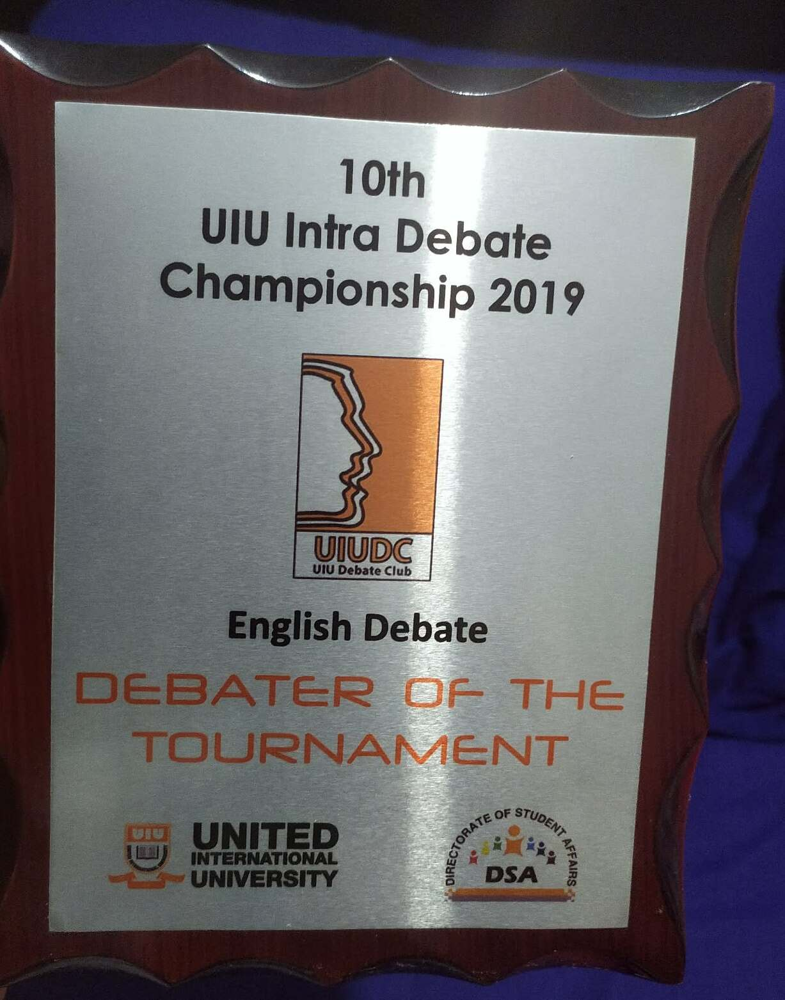

Renaissance
Fuel Management System (FMT)

Rock Detection Model & Soil testing for in-situ life detection
100% Scholarship and 50% Waiver

1st place in Asia and 13th worldwide

1st Runner-Up - CSE Project Showcase

Debater of the tournament (English Debate)
Higher Secondary Board Scholarship